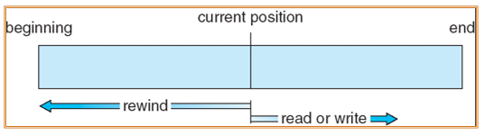

约 2455 个字 11 行代码 10 张图片 预计阅读时间 12 分钟
Chap 10 | File-System Interface
章节启示录
本章节是OS的第十章。这一章主要介绍文件结构的功能，以及一些暴露给用户的接口，也会涉及一些设计方面的内容。
1. File Concept¶

-
What Is a File System？
- File naming
- Where files are placed
- Metadata
- Access rules
-
文件的概念：连续的逻辑地址空间，可能是bits/bytes/lines/records的序列，由创建者和用户定义。文件是以硬盘为载体的存储在计算机上的信息集合。
- 种类：
- Data：numeric、character、binary
- Program：Source、Object、Executable
- 种类：
-
文件的结构：
- None：sequence of words, bytes
- Simple record structure：Lines、Fixed length（方便寻址但overhead大）、Variable length
- Complex Structures：Formatted document、Relocatable load file
-
文件的属性：Information about files are kept in the directory structure, which is maintained on the disk
- Name：only information kept in human-readable form （实际存储在目录中，并不是文件的内容）
- Identifier：unique tag (number) identifies file within file system 唯一的标识符
- Type：needed for systems that support different types
- Location：pointer to file location on device 文件实际在磁盘的位置
- Size：current file size
- Protection：controls who can do reading, writing, executing
- Time, date, and user identification：data for protection, security, and usage monitoring
-
文件的操作：
- Create
- Write：define a pointer
- Read：use the same pointer：Per-process current file-position pointer
- Reposition within file (file seek) 跳转到特定位置再开始读写
- Delete
- Truncate 把pointer移动到某一个特定的位置，插入一个EOF，截断后面的部分
- Open(Fi)：search the directory structure on disk for entry Fi, and move the content of entry to memory
- Close (Fi)：move the content of entry Fi in memory to directory structure on disk
-
Open-file table：一个在内存中的数据结构，记录了打开的文件的状态，Open() system call returns a pointer to an entry in the open-file table
- 每个进程在本地有一个打开文件表：Per-process table
- Current file pointer
- Access rights
- 全局的打开文件表 System-wide table 在kernel中
- Open count 打开的当前文件的进程数量
为什么需要两种打开文件表？
每个进程对同一个文件的处理可能是不同（打开位置不同、权限不同等），如果只有一张全局的表，记录起来会比较麻烦，于是将其解耦，分到各个进程的表中，这样也会有更好的隔离性，同样的文件的id在不同进程的打开表中也可以不同。
- 每个打开文件都具有以下信息：
- 文件指针：该指针对操作文件的每个进程是唯一的，因此必须与磁盘文件属性分开保存
- 文件打开计数
- 文件的磁盘位置：大多数文件操作要求系统修改文件数据。查找磁盘上的文件所需的信息保存在内存中，以便系统不必为每个操作从磁盘上读取该信息
- 访问权限：每个进程都需要一个访问模式（创建、只读、读写、添加等）打开文件，这种信息保存在进程的打开文件表中，以便操作系统能够允许或拒绝后续的I/O请求
- 每个进程在本地有一个打开文件表：Per-process table
-
Open Files：
- File pointer: pointer to last read/write location, per process that has the file open
- File-open count: counter of number of times a file is open – to allow removal of data from open-file table when last processes closes it. 当这个值变成0时，代表最后一个使用这个文件的进程把这个文件关闭了，于是操作系统可以释放这个文件的资源。
- Disk location of the file: cache of data access information – system doesn’t need to read it from disk for every operation.
- Access rights: per-process access mode information
-
Open File Locking：
- Mandatory：access is denied depending on locks held and requested 强制锁，很好的安全性，保持一致性
- Advisory：processes can find status of locks and decide what to do 建议锁，为了效率和灵活性的妥协
-
文件的类型：
- MS-DOS：文件类型主要是通过文件扩展名来识别的。例如，.TXT 表示文本文件，.EXE 表示可执行文件，.DOC 表示Word文档等。这种方式简单直观，但并不总是可靠，因为用户可以随意更改文件扩展名。
- MAC OS X：Each file has a creator attribute containing the name of the program that created it.在Mac OS X系统中，文件类型可以通过“creator code”或“creator attribute”来识别。这个属性包含了创建文件的程序的名称或标识符。例如，如果一个文件是使用TextEdit创建的，它的creator code可能是TTXT。
- UNIX：Magic number (executable, shell script, postscript, …) 在UNIX系统中，文件类型通常是通过文件的“magic number”来识别的。Magic number是文件开头的一系列字节，用于标识文件类型。例如，可执行文件通常以\x7fELF开头，shell脚本以#!开头，PostScript文件以%!PS-Adobe开头。
2.Access Methods¶
- Sequential Access 顺序访问 
- Direct (Random) Access 直接访问：文件由固定长度的逻辑记录组成，以允许程序按任意顺序进行快速读取和写入记录。对于直接访问方法，必须修改文件操作以便包括块号作为参数。因此，有read(n)，其中n是块号，而不是read_next()。

3.Directory Structure¶
-
目录结构：Directory Structure
- 目录可以看作是一个符号表，它将文件名转换为文件控制块（FCB）。可以理解为独立于所有文件之外的“文件”，每一个entry告诉我们每一个文件的控制信息。
- 包含所有文件（管理）信息的节点集合
图中上方其实就是表，每一个圆就是一个表项。
-
卷：Volume 是一个逻辑上的概念（物理上的概念叫partition（从磁盘上划分出来）），在每一个卷上放一个目录，剩余的空间放文件

-
目录结构的作用：
- Efficiency：能够很快定位
- Naming：方便识读
- Grouping：使得操作系统在加载时更加方便。
-
目录执行的操作：
- Search for a file ：find /path/to/search -name filename
- Create a file：touch filename
- Delete a file：rm filename
- List a directory：ls /path/to/directory
- Rename a file：mv oldname newname
- Traverse the file system：access every dir and file for backing up.
-
Single-Level Directory：A single directory for all users
- Naming Problem 单级目录要求所有文件必须具有唯一的名称。
- Grouping Promblem
-
Two-Level Directory：Separate directory for each user 每个用户都有自己的用户文件目录（UFD），当用户作业开始或用户登录时，搜索系统的主文件目录（MFD），通过用户名或账户可索引MFD，每个条目指向该用户的UFD。

- Path name
- Can have the same file name for different user
- Efficient searching
- No grouping capability
-
Tree-Structured Directories:

- Each directory entry contains a bit defining the entry as file(0) or directory(1).
- Efficient searching
- Grouping Capability
- Current directory (working directory) 存储当前目录，便于查询寻找
-
Acyclic-Graph Directories 无环图，可以跨越层次，灵活性更好（同一个文件有多个路径），如果两个用户都希望平等地获取/修改某个文件，也就是都希望该子目录在自己的目录内。在这种情况下，公共子目录应该共享（在树中明显不可能，因为一个孩子不可能有两个父节点）。
- Requirement for file sharing
- Have shared subdirectories and files
- If dict deletes count => dangling pointer 可能会出现悬挂指针的问题，因为删除文件时可能只删除了其中一个指向它的指针，其他指向它的指针未被删除
- Solutions：Backpointers (keep a list of references to a file), so we can delete all pointers.删除某个文件时，删除所有指向它的指针。
-
General Graph Directory：采用无环图结构的一个严重问题是确保没有环（我的理解是需要额外的overhead），如果允许目录中有环，则无论从正确性或性能角度而言，同样需要避免多次搜索同一部分。设计不当的算法可能会无穷搜索环而无法终止（一种解决方案是可以限制在搜索时访问目录的数量）。

- If cycles allowed
- Repeated search the same object
- File deletion problem (count <>0 even if unused)这种异常源自目录中可能存在自我引用。在这种情况下，通常需要使用Garbage collection方法
- How do we guarantee no cycles?
- Allow only links to file not subdirectories 只允许创建指向文件的link，不允许指向子目录
- Garbage collection 垃圾回收的机制，确定何时最后引用已被删除并重新分配磁盘空间，也就是清理没有用的文件/目录，需要付出额外的扫描时间：
- Garbage collection涉及遍历整个文件系统，并标记所有可访问的文件。然后，第二次遍历收集所有未标记的到空闲空间列表
- Every time a new link is added, use a cycle detection algorithm to determine whether it is OK 每次添加新链接时，循环检测是否存在循环。
- If cycles allowed
Soft (Symbolic) Link vs. Hard Link
- Soft Link:
- 软链接是一个单独的文件，通过存储其路径指向原始文件。（也就是说这个文件其实就是一个“路径”（目的还是为了访问原始文件））原始文件可以被删除，而存储路径的文件还存在，这并没有任何影响，因为不存在空的指针，只是表明文件找不到。（可以类比为快捷方式）
- 软链接有自己的索引节点（FCB），它的数据包含链接文件的路径，而不是文件数据本身。
- 软链接可以跨越文件系统，因为它们只是通往其他文件的路径。
- Hard Link：
- 硬链接是现有文件的附加名称。它增加了文件的链接计数，这是一个文件有多少个名称（链接）的计数。
- 硬链接原始文件和硬链接都指向同一个索引节点（FCB）。
- 硬链接不能跨文件系统；不能为目录创建硬链接，以防止循环的产生。